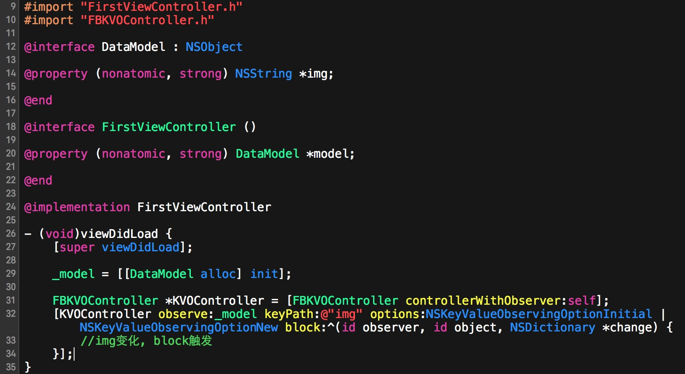
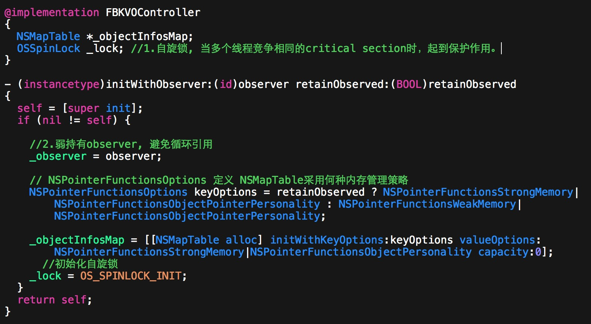
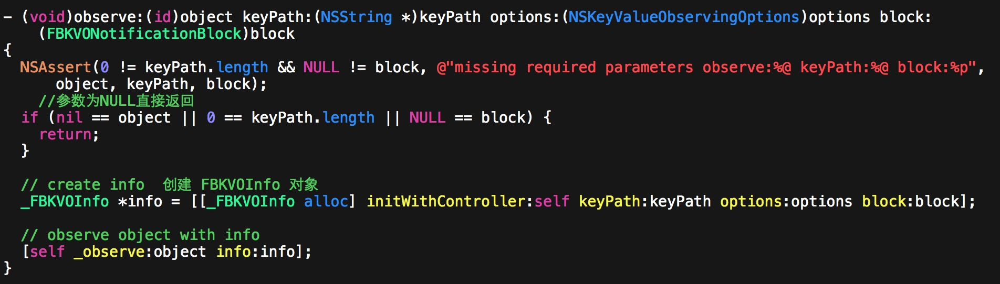
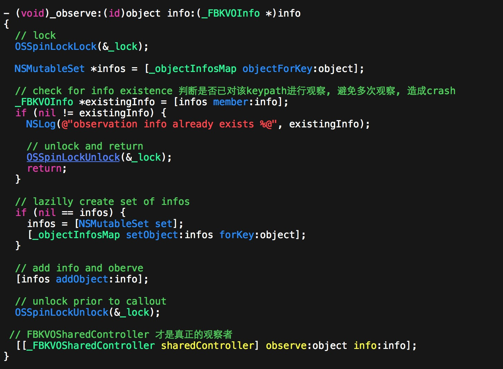
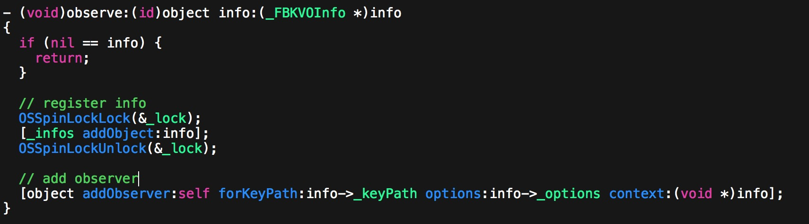
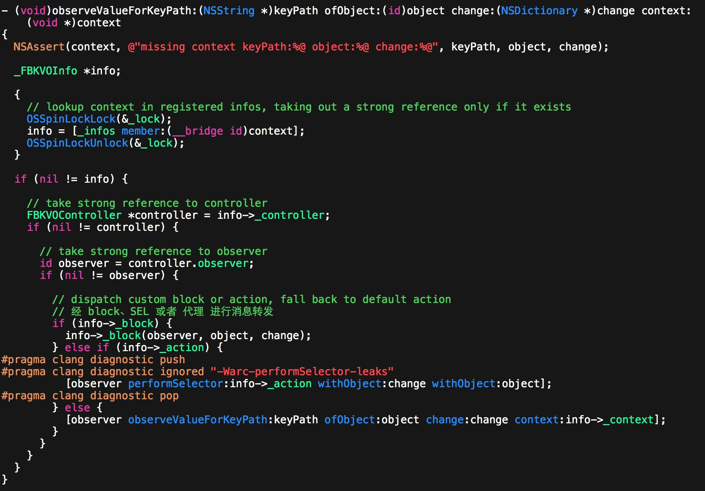

Installation
在podfile中添加 pod 'KVOController'
pod installorpod update
FBKVOController的一般用法

代码结构
1.FBKVOController
对外公开的类，对外提供了初始化，数种监听的方法。
①: 初始化FBKVOController

②: 观察对象的keypath

③: 添加观察之后的下一步传递, 做保护并传递到真正的观察者FBKVOSharedController

2._FBKVOInfo
内部类，用来记录监听所需的参数信息。
3._FBKVOSharedController
内部类，真正实现kvo的类，通过FBKVOController的外部方法调用。

通过以下方式将最终的消息转发

总结: 目前只对FBKVOController的使用方法及流程有了初步的了解, 具体实现还不是很熟悉, 下次补全~!